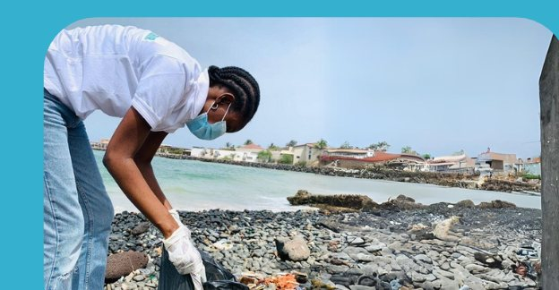

Ce que nous faisons
Sur le terrain, nos bénévoles agissent là où les besoins sont les plus urgents.

Soigner et prévenir
Campagnes médicales, dépistages (hypertension, diabète), soins dentaires, dons de médicaments et accès aux soins pour les communautés les plus isolées. En novembre 2025, notre campagne à Fass Ngom a permis des consultations gratuites pour des centaines de personnes.

Éduquer et transmettre
Soutien aux daaras et aux écoles, collectes de vêtements, distribution de vivres, formation et développement des compétences des jeunes. Nous accompagnons les enfants et leurs encadrants au plus près de leurs besoins.

Préserver le cadre de vie
Opérations Set Sétal, nettoyages et sensibilisation au respect de l'environnement, pour un cadre de vie plus sain et des générations futures mieux protégées.
Comment nous agissons
Sensibiliser, soutenir et faciliter l'accès aux soins sanitaires.
Promouvoir le droit à l'éducation, former et développer les compétences.
Informer et agir pour construire un avenir meilleur.
Chaque cœur compte
Un geste aujourd'hui, c'est un repas distribué, un enfant soigné, une famille soutenue.
❤ Faire un don